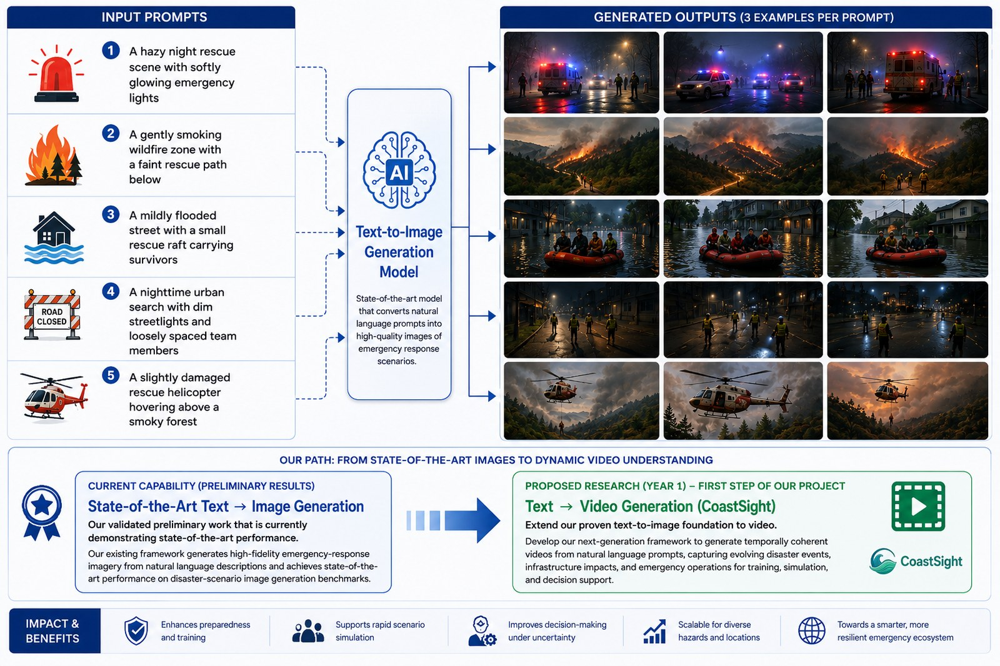

AI-generated scenarios for emergency response
CoastSight is developing a framework that turns natural-language descriptions into realistic emergency-response imagery — and, next, into short training videos — so responders and planners can rehearse rare, high-stakes situations without waiting for them to happen.
State-of-the-art text → image generation
Our validated preliminary work is currently demonstrating state-of-the-art performance. The existing framework generates high-fidelity emergency-response imagery from natural-language descriptions and achieves state-of-the-art results on disaster-scenario image generation benchmarks.
Text → video generation (CoastSight)
We're extending our proven text-to-image foundation to video: a next-generation framework that generates temporally coherent videos from natural-language prompts, capturing evolving disaster events, infrastructure impacts, and emergency operations for training, simulation, and decision support.
How the image model works
Five example prompt categories are shown below — each one is fed to the text-to-image model, which returns several candidate scenes per prompt.
A hazy night rescue scene with softly glowing emergency lights
A gently smoking wildfire zone with a faint rescue path below
A mildly flooded street with a small rescue raft carrying survivors
A nighttime urban search with dim streetlights and loosely spaced team members
A slightly damaged rescue helicopter hovering above a smoky forest
Text-to-Image Generation Model
A state-of-the-art model that converts natural-language prompts into high-quality images of emergency-response scenarios.
Every prompt yields multiple candidate images, giving trainers a range of realistic — but controllable — scenarios to draw from.

Impact & benefits
Why realistic, generated training scenarios matter for emergency preparedness.
Preparedness & training
Realistic scenario imagery for drills and curricula.
Rapid scenario simulation
Generate new situations on demand, in minutes.
Better decisions under uncertainty
Rehearse edge cases before they happen for real.
Scalable across hazards
One framework, many hazard types and locations.
A more resilient ecosystem
Toward a smarter emergency-response system overall.
Standing up the CoastSight VIP team
Recruitment, launch timeline, and funding are tracked live on the action-plan dashboard.